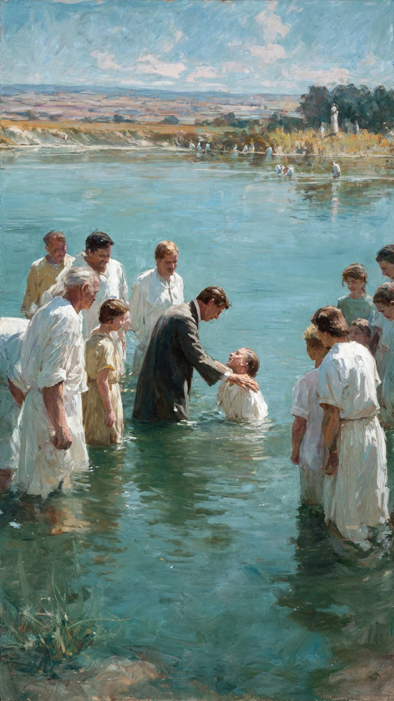

O batismo nas águas não deve ser encarado como um rito de passagem social ou uma formalidade religiosa de rotina. Para o cristianismo bíblico, este ato exige uma preparação interna rigorosa e o preenchimento de requisitos que validam a experiência espiritual diante de Deus e da comunidade dos santos.
O requisito fundamental e inegociável para o batismo é a posse de uma fé salvífica e regeneradora. Não se trata de uma anuência intelectual aos fatos históricos sobre Jesus, mas de uma entrega total à Sua soberania. No diálogo registrado em Atos capítulo 8, o eunuco etíope questiona Filipe sobre o que o impediria de descer às águas. A resposta de Filipe estabelece o padrão de ouro para todos os séculos: a licitude do batismo está condicionada ao "crer de todo o coração".
Essa confissão não é apenas verbal; ela é o resultado de uma alma que reconheceu sua incapacidade espiritual e depositou em Cristo a sua única esperança de redenção. Sem esta fé pessoal, o mergulho nas águas torna-se apenas um banho físico, destituído de valor espiritual eterno.
O segundo requisito é a disposição para a confissão pública. No original grego, a palavra para confissão é Homologeo, que significa "dizer a mesma coisa que Deus diz". Quando o candidato desce às águas, ele está concordando com Deus sobre seu estado de pecado e sobre a necessidade de salvação em Jesus.
O batismo é o momento em que a decisão individual torna-se um testemunho coletivo. O candidato "ultrapassa os limites" da privacidade espiritual para assumir publicamente o senhorio de Cristo. É a assinatura de um compromisso que rompe com as alianças do passado e estabelece uma nova cidadania no Reino de Deus. Esta confissão deve ser firme, consciente e livre de coação externa.
João Batista, o precursor, confrontava os religiosos de sua época exigindo que apresentassem "frutos dignos de arrependimento" antes de buscarem o batismo. Este requisito aponta para a eficácia da transformação. O arrependimento não é um sentimento passageiro de culpa, mas uma mudança de direção prática e objetiva.
A vida de quem pleiteia o batismo deve evidenciar que as práticas, vícios e comportamentos da "velha vida" estão sendo subjugados pela presença do Espírito Santo. O batismo não é um meio para se obter o arrependimento, mas a evidência pública de que o arrependimento já ocorreu. É a celebração de uma vida que já começou a refletir a luz de Cristo no cotidiano.
Concluímos que a prontidão para o batismo é alcançada quando a fé, a confissão e o arrependimento convergem na vida do crente. Se você compreende a magnitude desta decisão e seu coração arde por obedecer ao mandamento do Senhor, você está pronto para selar esta aliança. O batismo aguarda aqueles que, com consciência plena, desejam morrer para o mundo e ressurgir para uma caminhada de santidade e serviço no Reino de Deus.